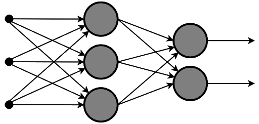
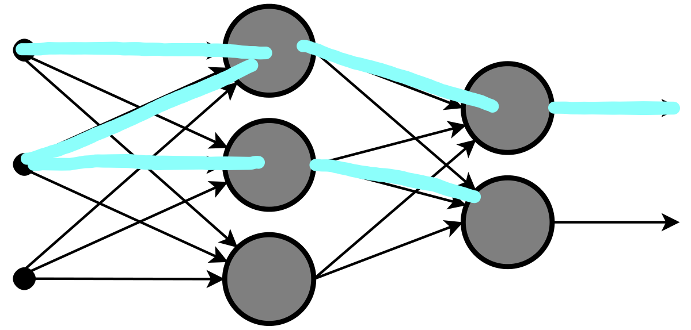
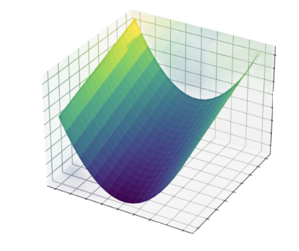

Neural networks are fun and I mean it when I say that. What is fun about them? Well, What is not fun about neural networks! They act just like the human brain! A series of algorithms that mimic the operations of a human brain! They are used to detect relationships between a vast amount of data, that can be literally anything until and unless it makes sense. What powers a neural network is the math behind it, so in other words maths combined with computer science has the ability to mimic the different functions of the human brain all depending on the data you provide it and configure it for! How fascinating is that. So basically a neural network is a series of neurons arranged in layers that is connected to a layer of more neurons, but each of the neurons in the first layer will be connected to all neurons of the second layer. So a graphical representation of a simple neural network should look like this.
Overall there are 3 types of neural networks, Artificial, convolutional and recurrent. I will only be talking about convolutional neural networks. But before that:
What are neural networks
When we see a handwritten digit 0, the receptors in our eyes fire multiple nerve impulses that process the image or the light that just got reflected on our eyes and let us know that what we see is a zero and this happens in a flash. Neural networks use this similar architecture too, but unlike the neurons in our body, the neurons inside a neural network are made to hold a value between the range of 0 to 1. When a neural network has to study images, the network’s first layer will have the same amount of neurons as the amount of pixels on the image, the image being inputted will be grayscale and each neuron will correspond to a value between 0 to 1 based on the brightness of each pixel, so a black pixel will equal 0 and a white pixel will equal 1. The connections between various neurons hold a value called a weight, about which we will be talking about later. Similar to the neurons in our body, a nerve impulse travelling in one neuron will affect the neuron that comes after it, here we refer to this impulse as activations.
Here, the cyan lines signify the activations one one neuron affecting the other. Suppose that this is a neural network that can classify weather a handwritten digit is a 0 or a 1 and needs to be fed an image, it will look at each pixel of the image provided and check for patterns that are usually found in the digits, like a 0 will always have a loop, and a 1 will always have a line, So when i feed it any image with a loop in it certain neurons might have higher activations while some have a lesser one. In the last layer of any neural network the number of neurons represents the number of outputs, so in my case one neuron represents a 1 and the other a 0. But if i feed it an image of a 1 it wont mean that the neuron for 1 will have a value of 1 it can be any, even 0.8 but the value that is given in the output depends on what is the highest value among the neurons in the last layer, in other words the brightest neuron is the output.
How does a neural network detect patterns?
For a neural network to have the ability to detect patterns, it uses a lot of variables that act like controls that must be tweaked for detecting or grasping a visible pattern in the data that is being fed to it. A weight is assigned to each of the connections between these neurons.
Now as you know that each neuron in the first layer is connected to each and every neuron on the second layer and also that each connection has a separate weight value. These weights and activations are now computed for each neuron in the second layer. The formula is
(w1a1 + w2a2 + w3a3.….w(n)a(n)+b ) this is called the weighted sum.
So basically the weights tell you what patterns the specific neuron in the second layer is looking for and the bias(b) tells you how high the weighted sum needs to be before it starts to make a difference in the results.
There is a second formula that is applied on top of this to scale the value of the weighted sum into a number between 0 to 1, it is called the sigmoid function.
 Now among all this, somewhere you might have started to wonder what exactly causes this neural network to learn? like what actually triggers the learning and how does the network know what it needs to learn?
That’s where we zero in on the topic of
Now among all this, somewhere you might have started to wonder what exactly causes this neural network to learn? like what actually triggers the learning and how does the network know what it needs to learn?
That’s where we zero in on the topic of
Gradient descent
The idea is to have an algorithm that can be introduced to loads of labeled data that is specifically meant for training and that algorithm can then tweak the weights and biases in such a way that it generalises them so that it can successfully recognise the object from photos or data that it has NEVER EVEN SEEN BEFORE. If we keep the values of all weights and biases to be random then the output neurons will be a complete mess, some neurons may be near to white while some may be gray. An occurrence like this tells that the neural network doesn’t know a thing about what it’s doing. To tell my network what it SHOULD BE DOING, i need to define a cost function, this function takes the difference between the rubbish output(R) and the expected output(E) ,does the same for every other output,then I square them, and then simply add them. If i want it to recognise a specific digit like 5 then my expected values will be 0.93 for the neuron that represents 5, while somewhat 0.01 to 0.1 for others right so i will take the value that my neuron for 5 is giving me then subtract it with what i WANT IT TO BE,square that value, do the same for other neurons then add the squared values together and there we have the COST FOR 5. Simple right? Right? This happens for all the given inputs so now I will take the cost values for all the given inputs and take out its average. This average value defines how bad or inaccurate the weights and biases are. So if the average value is low, it is a good thing, which means that the network now has to find how low can this value go, which means a minimum point. If I plot each of the input’s cost in a graph they will represent this whole complicated function with lots of ups and downs in them, so the network has to figure out how to make its output(the cost) lower. The approach it uses is to start measuring the gradient at any older input and shift to the left of the graph if the slope is positive and shift to the right if the slope is negative and certainly it will reach a point in the graph where the slope is 0. However, the minimum our network has converged to at this moment might unfortunately not been the actual minimum but rather just the minimum of a specific area on the graph or the local minimum but it still gets carried over to the next steps. 
This is a graph of a cost function plotted over a X,y plane. This function can be represented as C(x,y) If you try to imagine gradient descent it is nothing much, just a way to converge onto a minimum point of a function. So how does doing all this tell the network what weights and biases to tweak? Now the network has to ask which direction decreases C(x,y) most quickly? The gradient of this function will give the direction of the steepest ascent, taking its negative will give us the direction to decrease its output most quickly. This gradient is computed in the form of a vector, the length of this gradient vector tells us how steep this steepest slope is. So the network computes this direction, takes a small step in that direction and repeats this step with the next input and this vector is then applied to the weights for the respective inputs. These values tell what are the weights that matter more or cause the output to differ more.
Backpropagation
Backpropagation is what enables a neural network to actually learn. It is the process of adjusting the weights and biases based on the cost function of one specific example, however this process is repeated with more and more examples to further refine the accuracy of the neural network. Let's go back to the example where we had to make a neural network recognise the handwritten digits between 0 to 5. We will feed our labeled training images to our neural network which then looks at the data then the label which suppose if it takes an image of the digit 5, the label in that case will be 5 so the network will want the output layer neuron that represents 5 to be of a higher value. Then it will look at what other cards it has that it can play to increase the activation of that particular neuron? It can change the bias, Increase the weights or change the activation of the neurons from the previous layers using the other 2 steps. All these weights will have a different level of influence, usually the weights with highest influence are the ones that originate from the brightest neurons in the previous layer as they are multiplied by higher activations than compared to the others. When the network looks at the previous layer, it looks at weights between them...if the neurons connected to negative weights get their activations decreased, and the ones connected with positive weights get their activation increased, the activation of the neuron we are looking at will increase, hence it will become more active. Now to increase or decrease the activations of the previous layer, something must be done to the layer before to the previous layer now you can see the idea of backpropagation shining. Then the same process will be repeated for every other neuron in the output layer
Just a small explanation of convolutional neural network
Ohh wait I forgot to tell you what convolutional neural networks do! So a convolutional neural network just contains convolutional layers. These layers have the task to detect patterns in images, in each convolutional layer i can specify the number of filters the layer has and these filters are able to detect patterns. A filter detects these patterns based on; edges, corners, circles or squares, however they can even detect whole objects like the eye or face or even complex shapes like that of a microorganism.